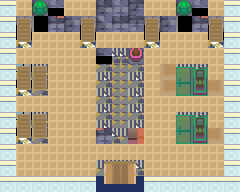
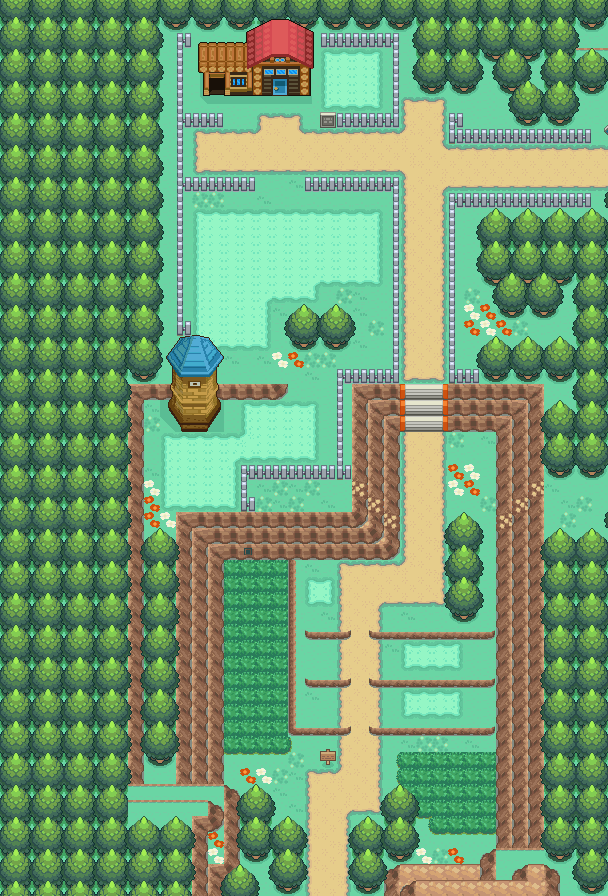

HM05
将对手困在水流旋涡中， 在4\symbol[D3]5回合内进行攻击。
获取：2号公路(4,6) ／ 39号道路
用途
将对手困在水流旋涡中， 在4\symbol[D3]5回合内进行攻击。
标价 0 口袋：招式学习器
获取方式
人物剧情
- 2号公路（区域102） · (4,6) · 与坐标处人物交互 · 数量 1 · 地图｜静态图 · 触发条件待补
- 39号道路（区域164） · 与坐标处人物交互 · 数量 1 · 地图｜静态图 · 触发条件待补


数据来源
- 来源文档：out/items.json（
/343） - 表索引 index 0343；内嵌 itemId 343；口袋 TM_CASE (id=4)；type 1；hold_effect 0/0；importance 1；unk19 125
- 获取来源文档：maps_research/out/scripts/scripts.json
- 获取记录 ID：
script_item_candidate:0816F6D8:15:2、script_item_candidate:std:08AF6F62:3:93 - 说明文字解码来源：
reference/SAVE_HOME_GAME_DATA.json.charmap
地点地图
共享RGB底图；点击可缩放定位。数字对应本页相关地点，不代表地图上全部事件。
2号公路

1 HM05（4,6） 底图有7个图块缺少原始数据。
39号道路

1 HM05（剧情触发区，1格）；2 HM05（剧情触发区，1格）；3 HM05（剧情触发区，1格）